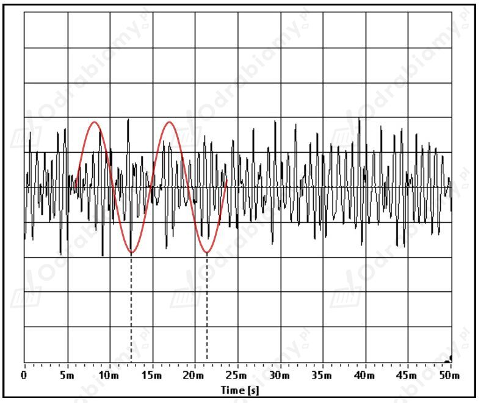

Pobieramy program komputerowy pełniący funkcję oscyloskopu (poniża ikona odsyła do strony, gdzie można pobrać darmową aplikację).
Uruchamiamy program. Do komputera podłączamy mikrofon. Na oscyloskopie powinniśmy zauważyć pojawiający się wykres rejestrowanej fali dźwiękowej, kiedy mówimy do mikrofonu. Odtwarzamy do mikrofonu dźwięk klaksonu (np. puszczony ze smartfonu).
Przykładowy dźwięk klaksonu (poniższa ikona otwiera link do filmu na YT).
Aby zapisać na ekranie wykres fali dźwiękowej zatrzymujemy przebieg wykresu podczas odtwarzania dźwięku naciskając przycisk Run/Stop. Następnie możemy zapisać okno z graficznym obrazem fali przy pomocy przycisku save.
Warto skorzystać również z pokrętła Time [s] pozwalającego na zmianę przedziału czasu w jakim obserwujemy wykres dźwięku.
Należy teraz odczytać okres całego pakietu fal składającego się z mniejszych oscylujących dźwięków. Najłatwiej jest to zrobić przypatrując się najwyższym pikom amplitudy dźwięku.

W naszym przypadku okres rejestrowanej fali dźwiękowej wynosi:
Stąd jego częstotliwość będzie równa:
Dźwięk o oktawę wyższy to dźwięk o dwa razy większej częstotliwości.
Zatem częstotliwości poszczególnych dźwięków możemy zapisać jako:
Zauważamy ogólną zależność:
Ultra dźwięki to dźwięki o częstotliwości wyższej niż słyszalna dla człowieka:
Zatem:
Szukamy takiej liczby całkowitej , dla której otrzymamy wartość większą od 45:
Zatem po 6 oktawach dojdziemy do ultradźwięków.
Przepływ prądu elektrycznego w urządzeniu powoduje powstanie pola magnetycznego:
Zmiany pola magnetycznego w urządzeniu powodują powstawanie napięcia elektrycznego:
Urządzenie, w którym zarówno przepływ prądu powoduje powstawanie pola magnetycznego, jak i zmienne pole magnetyczne wytwarza napięcie elektryczne to:
Kompas nie wykorzystuje do swojego działania żadnego z powyższych zjawisk.
W fali elektromagnetycznej występowanie zmiennego pola elektrycznego jest zarówno skutkiem, jak i przyczyną występowania zmiennego pola magnetycznego.
Mówimy, że fala elektromagnetyczna jest rozchodzącym się w przestrzeni zaburzeniem pola elektromagnetycznego. Zmienne pola elektryczne i magnetyczne nawzajem się wytwarzają.
Zjawisko blokowania fal elektromagnetycznych przez cienką warstwę odpowiedniego metalu (np. aluminium) działa podobnie jak klatka Faradaya. Powierzchnia folii aluminiowej wygasza fale elektromagnetyczne, które chciałyby przez nią przejść. Stąd żadne fale radiowe nie mogą dotrzeć, ani zostać odebrane z telefonu.
Rodzaje fal elektromagnetycznych:
Zakresy fal elektromagnetycznych:
Prędkość światła wynosi:
Prędkość dźwięku w powietrzu wynosi:
Załóżmy, że siedzimy od telewizora w odległości:
Wyznaczmy czasy potrzebne na dotarcie do nas obrazu i dźwięku:
Czas podróży światła od telewizora do obserwatora jest tak mały, że możemy przyjąć go jako zerowy.
Zatem opóźnienie między obrazem, a dźwiękiem wynosi około 9 ms. Tak małe opóźnienie nie jest możliwe do zauważenia przez człowieka. Opóźnienia, które możemy zauważyć są większe od 20 ms. Im bliżej głośników będziemy siedzieć, tym mniejsze będzie opóźnienie.
Użycie słowa teoria oznacza w tym przypadku, że:
A. jest to najlepsze spójne wyjaśnienie wielu zjawisk obserwowanych w świecie przyrody.
Teoria naukowa może zostać przyjęta tylko wtedy, gdy znajduje potwierdzenie w obserwacjach doświadczalnych.
Ustawiamy opisane rodzaje fal elektromagnetycznych według rosnącej częstotliwości: